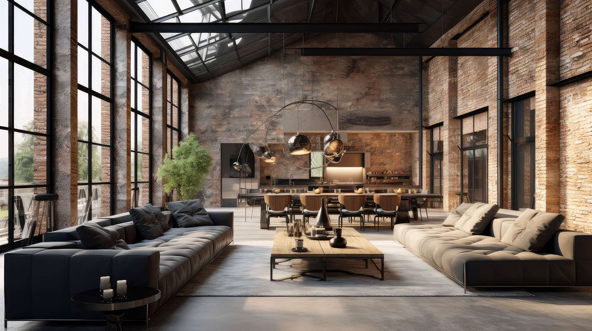
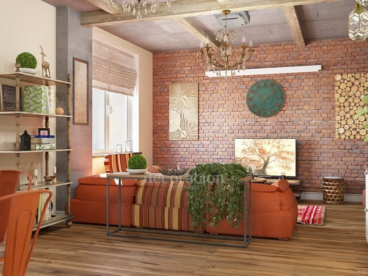
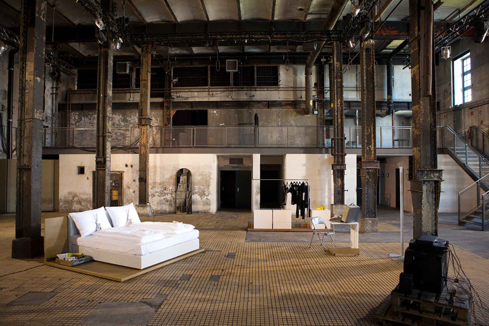

Лофт

Основная цветовая гамма
Кирпичный, серый бетон, коричневый, черный металл, белый
Краткое описание стиля
Стиль, который родился, когда заводские цеха начали переделывать под жилье. Его суть — контраст грубой отделки и современного комфорта. Открытая планировка, высокие потолки, кирпичные стены и коммуникации, оставленные на виду.
Разновидности лофта
| № | Разновидность стиля | Фото дизайна | Краткое описание |
|---|---|---|---|
| 1 | Бохо-лофт |  |
Смягчает индустриальность лофта богемным уютом: подушки, пледы, ковры, винтаж. Личный и эклектичный подстиль. |
| 2 | Индустриальный стиль |  |
Самый "заводской" вариант. Минимум мебели, утилитарная техника, только функциональный декор. Для ценителей суровой эстетики промзон. |